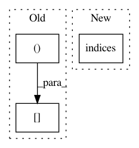

540d5e5a68e8fd3a9150ff241e2a70f21c059d96,tests/test_distance.py,,_slow_dist,#Any#Any#,3
Before Change
sd = np.empty(bw.shape, np.double)
sd.fill(np.inf)
s0,s1 = bw.shape
Y,X = np.mgrid[:s0,:s1]
for y,x in zip(*np.where(~bw)):
sd = np.minimum(sd, (Y-y)**2 + (X-x)**2)
if metric == "euclidean":
sd = np.sqrt(sd)
After Change
def _slow_dist(bw, metric):
sd = np.empty(bw.shape, np.double)
sd.fill(np.inf)
Y,X = np.indices(bw.shape)
for y,x in zip(*np.where(~bw)):
sd = np.minimum(sd, (Y-y)**2 + (X-x)**2)
if metric == "euclidean":
sd = np.sqrt(sd)
In pattern: SUPERPATTERN
Frequency: 3
Non-data size: 3
Instances
Project Name: luispedro/mahotas
Commit Name: 540d5e5a68e8fd3a9150ff241e2a70f21c059d96
Time: 2010-09-07
Author: lpc@cmu.edu
File Name: tests/test_distance.py
Class Name:
Method Name: _slow_dist
Project Name: ilastik/ilastik
Commit Name: 09f11428ceeac33f36136e0dcb65659195e94c7c
Time: 2012-10-04
Author: bergs@janelia.hhmi.org
File Name: tests/testOpInputDataReader.py
Class Name: TestOpInputDataReader
Method Name: test_h5
Project Name: ilastik/ilastik
Commit Name: a675f195b0ecbe7123391e45d799e8e049181617
Time: 2012-10-04
Author: bergs@janelia.hhmi.org
File Name: tests/testOpStreamingHdf5Reader.py
Class Name: TestOpStreamingHdf5Reader
Method Name: setUp